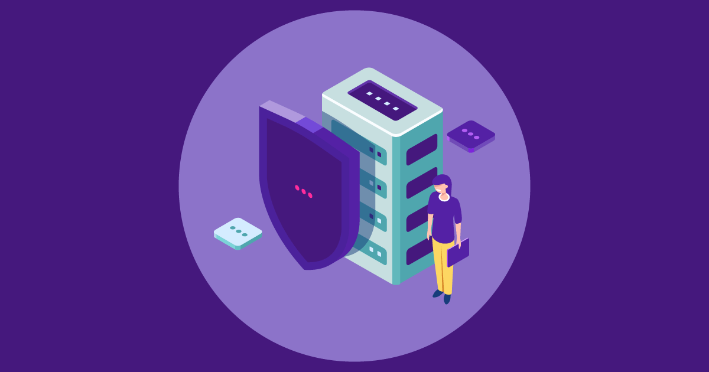
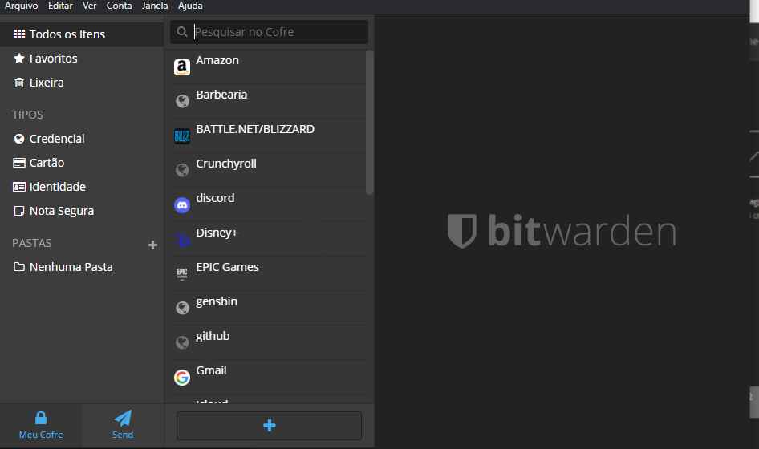

O SafeBank está sendo desenvolvido para realizar o trabalho de gerenciamento de senhas
com extrema dificuldade para que pessoas má intencionadas chamadas de “Hackers” tenham, certa dificuldade
para descobrir suas senhas, mantendo com total segurança cada uma delas. O desenvolvimento em banco de dados
criptografados com acesso limitado, usando detalhes para que não deixe nenhum tipo de rastro para que possa
prejudicar tanto o usuário, quanto nós que realizamos a proposta de proteger e ajudar. Nossa proposta
funciona de maneira que o usuário gere uma senha aleatória e coloque em uma parte um código pessoal, sendo
no início, meio ou fim, para dificultar com que sejam "Hackeados'' De maneira que Bots tenham dificuldades
de acessar quaisquer dados.

Objetivos
O SafeBank, tem como seus principais objetivos levar para a sociedade uma forma
segura de planejar e salvar senhas, de maneira com que seja simples e de fácil entendimento para todas as
idades, o principal problema pode ser o vazamento de informações por alguns tipos de vírus e malwares,
havendo a possibilidade de uma invasão de nosso banco de dados.
Estratégias
As estratégias adotadas não foram fora do padrão que está sendo usado atualmente,
porém pretendemos usar a melhor forma para armazenar o os dados e as senhas dos nossos clientes usando uma
forma concreta e bem desenvolvida dos melhores bancos de dados atuais, também, pretendemos criar uma série
de proteções para caso aconteça alguma invasão não ficarmos à deriva dos hackers por trás do ataque.

Nicho e Proposta de Valor
O Safe Bank tem um nicho Quase que exclusivo para quem deseja ter um nível de proteção
acima do normal, de acordo com as pesquisas feitas já existem alguns aplicativos como o nosso, o Bit Warden,
o próprio banco de senhas desenvolvido pela Apple entre outros, com tantos produtos do mesmo ramo no mercado
ideias de como melhorar o nosso produto não faltam.
Pode-se dizer que a proposta de valor é levar total segurança e conforto para nossos usuários, com acesso
rápido a suas senhas.